|
Castle Hill Climbing Guide
|
By Lee Skidmore, November 1999
Last updated 01 April, 2004
|
|

|
The most complete climbing guide available.
Note: Most heights, grades and descriptions are my personal opinions and are not in any way correct or validated. I give out stars purely where I think they are warranted (yes, it's biased) - enjoy.
WHERE IS IT?
Castle Hill is the huge great lump of coarse monzogranite lying right in the centre of the city! Its peak is 286m above sea level. On Townsville's 1:100000 map #8259 it is closest to the co-ordinates 79,70. If you can't find this, you are not in the right city. As Townsville's map shows, there is a tourist drive that runs up to the top of the 'hill'. Drive up this to access the lower car park before the peak of the hill and the tourist lookout.
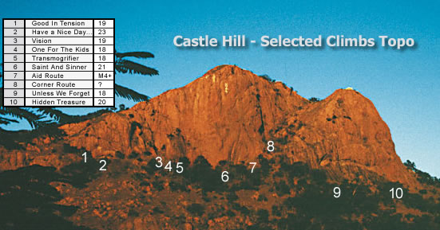
|
THE CLIMBING
The climbing is very interesting on Castle Hill - completely different to Mt Stuart. It's not as good as Mt Stuart's classic style, but it should be experienced. There aren't that many routes here in comparison to Mt Stuart, but many lines are unmarked and were done
back in the days of yore with little or no protection. On this page I will only discuss the routes I have seen or climbed myself. There are definitely more I don't know about. Some
old routes have painted initials but their real names are lost in the mists of
time. Therefore in this version of the guide, I have re-named them.
There several actual multi-pitch routes and many shorter, one pitch routes around. The routes generally ascend very coarse, large grained, crystalline pink granite. Chossy in places, but okay overall. Many of the moves feel insecure to the uninitiated, as they work bulges with rough smearing and odd-angled holds, but this makes Castle Hill a good place to work on technique, and it's quicker to get to than Mt Stuart.
|
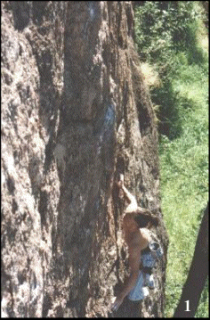 |
|
Above: Let it load to see an
animated sequence of Lee doing the first ascent of Coming Of Age
|
GETTING TO THE CLIMBS
Park in the lower carpark opposite the white restaurant and walk up the road for 30m until you hit the green Rotary "Adventure Trail" sign. Walk down the Adventure Trail to the R of the road ignoring all side-paths until you hit the railing on your L. Instead of continuing down at this point, break off L past the broken rock faces along a well worn track which leads to the start of the routes. This isn't the only way to get to the routes - you can walk up from below, or descend down the major gully from the very top of the central lookout.
Climbs are listed from left to right.
 = Sport route. No natural protection is needed to safely lead the route. = Sport route. No natural protection is needed to safely lead the route.
Stupid 3m 5
15m right in from the first rail is a wide crack marked "14". It is so short it doesn't even qualify as a boulder problem. Worth climbing? Get real.
|
Nope 3m (?)
Up R and around the corner there is an overhanging blank dihedral marked "15". It doesn't look like it has any useful gear, and it's bloody harder than 15. Not worth the hassle.
Silly 10m A1
Marked S.
Starts down near the first railing on the path. You have to walk up from the track through some grass to reach it. The line of four
manky, horrid, rusty bolts leading to a natural seam. Some silly attempts have been made to free the route, but the bottom section is sharp and difficult.
Okie Kenokie 20m 18
Marked O. Actually better than it looks! 4m right of S. Starts with one thin, rusty bolt, and then follows a natural line of flared pockets up a seam passing another non-essential bolt en route to the top. Spend five minutes working out the crimpy start section, then up the pockets using up all your big cams and then some.
|
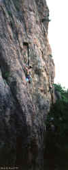 |
|
Above: Lee Skidmore onsighting Okie
Kenokie
|
|
* Good In Tension 18m 19
Be careful clipping the second bolt. Starts 3m R of O at the big trail arrow painted on the rock. Steeply up on jugs (FH) to below overhung scoop. Up through scoop clipping second FH (don't pike-off left onto slab!) and directly up to mantle sloping ledge. Clip third FH, then step R, up face, and over little block to good holds and fourth FH. Jug-haul runout up face to fifth FH and then up L to small ledge and double rings. To save your rope, abseil off the rings rather than lowering off them.
Lee Skidmore 10/5/98
Down R from these climbs is an obvious slabby wall with an overlapping, overhanging roof. This wall used to be good for bouldering before the floods hit it and built up sediment at the base. There is a cool slightly overhanging problem on the R of the slab (not capped by a roof). It starts in the small corner and moves L for about 6m. Ends at the chalked jug. |
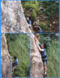 |
|
Above: Sequence of Jason Shaw on an
early ascent of Good In Tension
|
** Have A Nice Day, I'm Off To New Zealand 10m 23
Starts at the R end of the bouldering wall. Grab undercling and pull onto wall (FH). A huge move leads up to a balancy stance (FH). Traverse R and up to beneath rooflet and clip FH above rooflet. A hard move over rooflet and then L leads to fourth FH. Now up to chains.
Scott Bewley, Antony Timms 11/97
|
* Mr Krinkle 10m 25
Aptly named after a very burly canine.
Climb HANDIOTNZ to the third FH. Over roof to #2 cam in large pocket (possibly with small tree growing out of it) - use a long sling. Up 1.5m and traverse R 1.5m to pocket
(possibly with tiny plant) and small wires.
A dynamic crux up heading slightly R to ledge. No dedicated anchor.
Doug Hockly 14/7/98
Cripes 15+m 10-14?
Laughable! At the end of the bouldering wall, to the R of the route above, this 'climb' is located. It starts behind the boulder and ascends the corner with grass growing out of it. Yuck.
Move On 20+m? 13-16?
As you keep walking past the bouldering wall, you'll encounter the 10m high Pyramid Pinnacle on your L. This climb (that is actually marked with what looks like an upside down "U") starts behind this pinnacle. Up the face to some gear in the diagonal crack and then up from there I guess.
The following climbs are located on the Pyramid Pinnacle in front of, and 8m L of Vision.
* Macca's For Breakfast 12m 12
A good first lead / easy warm up. Located on the side of the Pyramid Pinnacle facing Vision. It starts 1m from the L ar�te. Climb up the delicate slab clipping three FHs and up to small roof. Clip fourth FH on roof then over roof to top. Chains (rap off, don't lower off).
Simon Thorogood 16/1/99
The Eye Of Ra 12m 21/22
Located around L of MFB on the seaward-facing side of the Pyramid Pinnacle. Climb slightly overhung, finger-crunching face clipping two FHs (crux). Trend L clipping third FH from where climb eases slightly, then move up onto gentle slab (two FHs) to chains at top. Rap off.
Bradley Mann 21/1/99 |
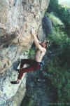 |
|
Above and below: Doug on the first
ascent of Mr Krinkle |
| 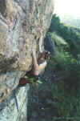 |
| 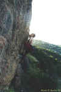 |
|
Above: Doug on the first ascent of
Mr Krinkle
|
Hieroglyphics 11m 18/19
Located 5m L of TEOR around the next side of the Pyramid Pinnacle. Clip first FH and climb onto face before heading L around ar�te up the vertical face, avoiding any of the large cheat stones for your feet (FH). Up clipping third FH off a L-hand mono pocket before reaching up onto the ar�te. Continue along ar�te (two
FHs) before traversing (crux) around bulge clipping tricky fifth FH. Now it�s up the overhung wall on jugs to chains.
Nathan Bolton 21/1/99
|
** Vision Variant Start 30m 18
Starts 2m R of the obvious landmark chimney, at the base of the massive face. A classic fingery slab - highly recommended! Up 4-5m to clip the first of about five FHs (make sure you are not on Vision which has its first bolt close to the ground). Tricky moves up to clip the second FH. The next FH is about 10m away up above the
rooflet. Climb up and L to the horizontal slot (pro) and up through the rooflet onto the face. Up flakes past possible #5 wire to third FH. Much easier climbing past the next couple of FHs up the cruisy slab will see you to the DBB right below the line of rusty bolts [see below for info]. From where you are now, you have two options (1) you can escape off L, or (2) [better] you can easily walk R-wards across the ledge about 5m to reach the DBB at the base of Vision's third pitch. Climb this to the top. |
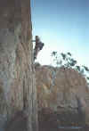 |
|
Above: Keith VDB attempting Vision
VS
|
Rusty Bolts 35m 23?
Starts 30m above ground at the top of the above climb. This climb is commonly called Rusty Bolts for obvious reasons. I've no idea the real name. Bolt brackets and good judgement regarding the bolts is required. Apparently someone had a bash at it and said it was harder than 23. Who knows?
Back down to ground level now.
Thrutch Sity 8m 13
Marked TS. Starts 3m R of the above climb. It's the fairly obvious offwidth between Vision's first pitch block and the main wall, and finishes at Vision's first pitch chains. I'm sad to say I was stupid enough to do it, and a big cam doesn't go astray.
|
** Vision 70m 19
A Castle Hill classic. A great climb to do in the afternoon. The route was rebolted in late 1998 to make it completely safe. Simply great climbing with excellent positions up the top. Starts a few metres down R of TS. If you can't find TS, walk past the bouldering wall, keeping an eye out for a wide chimney (landmark) up through the grass on your L. Continue past this for a few metres, keeping on the track until you hit the (overall) third railing on the track. Once here, punch up the hill through the grass for 10m (no track) to the base of the blunt ar�te of the large, slightly detached block that is the start of the climb. You'll know you're on track if you see a series of big, silver 90 degree FHs quite close together up the face.
1) 20m (18) A fairly tricky lead because the moves feel insecure. To start, climb up easily to clip the first FH. Cruxy moves through the second and third FHs will have you thinking. Keep going up past FHs until you reach the crack (medium wires) where the climb eases. Up to tree belay or back to the chains behind the tree. Escape off L (chains) is possible here, but keep climbing because the next pitches are better.
2) 15m (16) From the DBB behind the tree, step up onto the cheat stone and sidle L onto the thin face to clip first FH. Sweet moves past thin stuff interspersed with two thank-you-God, finger-engulfing jugs will lead you past the second and third FHs to the massive, exposed slab with fantastic views, easy moves and good bolts. Keep it
goin' on until you run into the ledge and DBB. A great pitch. You can scramble off L here if needed.
3) 30m (19) You'll need about 12 draws for this pitch. From the DBB, traverse R and up to clip the FH. Keep traversing R to clip another FH in a very photogenic position (some climbers choose to now traverse back and clean the first FH to reduce rope drag). From here it's up and R clipping bolts into the corner. Now cruxy and quite sustained moves up the pocketed corner to the top where some manky bolts belonging to 'Rusty Bolts' can be found along with the chains for this climb, about 4m back from the edge.
Stu Davies (1), Jason Blake (2), John Blake (3). Oct-Nov/93.
Parentheses indicate pitches led. |
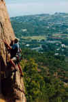 |
|
Above: Alex Coombs onsighting
Vision's first pitch |
| 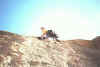 |
|
Above: Lee Skidmore onsighting
Vision's second pitch |
| 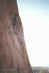 |
|
Above: Tim DeJersey leading (even
though it looks like seconding!) Vision's third pitch
|
** Vision Variant Finish 30m 19
Starts from the top of Vision's second pitch. Straight up past 8 FH's. Three
tricky cruxes at the 4th, 5th and 6th FH's. Run out between 7th and 8th FH with
jug moves.
Adam Hardaker, Nathan Bolton 1/6/2000
A few metres down R of Vision is a little toy wall. The first 7m or so of this wall is vertical and has some of the nicest flakes and incuts on the hill.
|
* One For The Kids [sport version] 13m 18
Popular. A fun sport route. Starts about 7m R of Vision. Has black FHs. Up flakes to clip first FH. Crank up to second FH and then force your way up onto the slab and third FH. Now trend easily up and R to finish at double rings.
Lee Skidmore, Philippa Newton 19/4/98.
* One For The Kids [trad version] 27m
18
A good alternative to Vision's first pitch. Climb the sport version to the third FH, but instead of heading R to rings, head L up the steepening slab. Mantle ledge and place crucial #2.5 cam. Continue trending L up the slab (fourth FH). Keep trending up and L to the Vision crack. Finish up the last few metres of Vision's first pitch. Tree belay. Descend via chains behind tree.
Lee Skidmore, Philippa Newton 19/4/98 |
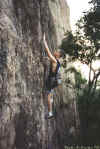 |
|
Above: Lee on One For The Kids
[sport]
|
* Coming Of Age 15m 21
Completed on Lee's 21st birthday. Grade 22 for shorties. Starts 4m R of OFTK just L of the tree. Up to clip first FH, move L and up 4m to clip second FH. Hard moves past this (crux) leads to jug and third FH. Mantle onto slab, runout past pockets and more slab to rings.
Lee Skidmore 31/5/98 |
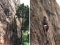 |
|
Above: Sequence of Jason Shaw
leading One For The Kids [sport]
|
Starting immediately R of Toy Wall and about 25m right of Vision is the incredibly obvious
100m high, super-sustained Hardman Wall.
|
** Transmogrifier 115m 18
1) 45m (crux) Starts 2m R of COA, R of the tree at the far L of the Hardman Wall. You'll need 5 hangers and
14 draws for this pitch in addition to gear for the bolted belay stations. Bridge
up using the tree, then move R into the groove with optional cam slot (creates rope drag). Continue following line of bolts
tending R up slab and steep headwall to chains.
2) 30m (17) From chains traverse up and right 7m to first FH, hard moves past next two FHs to thin crack. Follow this to
chains on hollow ledge.
3) 40m (16) Obvious crack up steep wall till it trends R. Follow this on natural gear to join up with S&S for the last few
BRs. Climbs the wall L of the majot groove L of the Saint. DBB (need hangers).
Joe Kippax, Scott Bewley 8/98 |
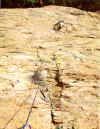 |
|
Above: Andrew Thorogood seconding
Transmogrifier's second pitch
|
10m L (when looking at the main wall) of the rock with the plaque on it are two large boulders on the R-hand side of the path. The largest of these has
some bouldering on its overhanging facet. V1 up the R arete, V3/4 starting under the overhang on the L-hand
side - dyno start (or harder
sit-start) up into the semi-circle and then slap on up to the spike. The
traverse is undone.
Project ??m 23?
Stay off until completed. Starts down L from SAS and L of the spiky tree. 1) 35m (~22) Climbs up and then crosses over through the first pitch of SAS, through a small rooflet to the chains.
The rest of the route will finish up R of the Saint.
Project: Joe Kippax 10/98.
*** Saint And Sinner
115m 21
"Saint" for obvious reasons, and "Sinner" because of the bolts - a plethora of
puny 10mm dynabolts which means the route will need to be rebolted earlier than
if it was done properly. Nevertheless, a great achievement. There are four rap stations on the route and about 50 bolts. You'll need about 14 quickdraws and five bolt brackets. It starts on the far R of Hardman Wall
uphill and R of the spiky pandanus tree (the direct start starts to the L of the tree).
1) 27m (21) This pitch has 12 bolts and goes up some sustained territory with the crux above the 9th bolt. A real endurance-fest. Starting R of the tree, up to ledge, then L onto face and up following bolts (the DS
(the first bit of Joe's project) starts L of the spiky tree and is
a similar grade).
2) 20m (19) Follow the
bolts to zig R up the slab, and then zag back L to chains.
3) (crux) A wandery crux pitch.
Up and R out the heavily bolted traverse, up, then an unlikely looking traverse
L at the flake. Up the groove and R around final roof to chains.
4) 35m (16) Up the
crack (2 FH's) and find the line of hangerless bolts up the wall L of the major
groove L of the Saint.
Joe Kippax (led all), Anthony Timms 5/98
From the above route, keep walking R (around the corner). This leads you to another big-ass wall which forms the L wall of the major gully that splits Castle Hill in two. In the approximate middle of this wall, about 25m up is a rap station with two white slings hanging off the bolts. This is the belay/rap station for the aid route discussed below.
Aid Route 25m M4+
On this L gully wall there are a couple of white streaks running down the wall. The L-most white streak up a water scoop is the first pitch of an aid climb. Rusty thin bolts, rusty pitons and 316 stainless rivets run up the climb. The climb goes to the rap chains and beyond another couple of pitches. Need multiple birdbeaks, hooks, RURPs, thin nailing gear, pitons, rivets, a hand drill and other stuff.
This was an unfinished aid route from long ago, but was aided onsight by Monsieur Beaulieu Jean-Louise.
Corner Route 35-40m 17-20?
Starts on the L wall of the major gully about halfway up, about 30m right of the aid route. It's the most obvious line on the wall, so I'd be very surprised if it hadn't been climbed before, however there are no markings at the base. Take some big gear and a helmet for the second. You could walk off the top, or take two ropes for a double rope rap off the fig tree.
Project 60m 21?
Further up the hill, this route is a 3 pitch project of Brad Mann's.
You can access the very top of the Funky Slabs (discussed below) by walking across the terrace from this corner route. 15m right of the corner route is a weakness. It's a seam/corner that would need to be bolted. Would make a fairly tasty hard route. Starts at the fig tree growing out of the rock.
From the corner route, walk down to the bottom of the gully and follow the rock R (looking at the rock) for about 10-20m to come across the Funky Slabs where the next climbs are located.
Sne 20m 13-16?
Faintly marked. The first route on the Funky Slabs. Starts 20m R of the gully and heads up the nice-looking orange slab between two black streaks. I can't see any pro whatsoever. I think you could finish this one by walking off left down the major gully, or alternately you could perhaps finish this one by falling off.
Dutch Igloo 20m 13-16?
Faintly marked.
Starts 2m right of S at base of the R-curving mini-corner on clean slab. Climbs up the slab just L of mini-corner to the first bolt at about 10m, then more slab. May be some protectable pockets on the slab. Probably finishes as per FF.
Flexing Flakes 25m 15
Faintly marked, but extremely hard to see the paint. A fairly scary lead. Starts 2m R of DI and heads up the orange slab to below the curving mini-corner (possible pro). Then straight over the overlap and up the slab for a few metres on flexing flakes to a thin rusty bolt. Up slab for about 8m to another bolt. Up slab (cams) to big break below headwall. Through easiest section of this to big ledge (natural pro belay). Walk off down gully.
|
* Unless We Forget 35m 18
An ANZAC day memorial climb. Starts 5m R of FF. Well protected if you take a full rack of cams & some small wires. Up slab for 2.5m to single pocket. Run it out easily to stance & first FH. A couple of tricky slab moves lead up to the second FH. From here, up & slightly R to pocket (small wire). Another few moves above this to pocket. Now big runout up easy slab to below overhang. Traverse L about 3m below overhang until it eases (join FF). Finish as per FF by placing big cam in horizontal break & climbing through easiest section of overhang to big ledge & natural pro belay.
Lee Skidmore 25/4/98
Somewhere around here is a rusted-to-crap 9mm hexhead carrot bolt hammered in about 1m off the ground.
|
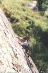 |
|
Above: Erik Smits on the second
ascent of Unless We Forget
|
Angular Grunge 20m 13-18?
Faintly marked.
Hard to see the paint. ~10m R of UWF. Starts on far R of detached block, just L of the chimney. I can't see any pro on this one, and it fully blanks out on the top section - grievous!
Don't Bother Vomiting 15m 10-15?
Faintly marked.
Hard to see the paint. Starts 3m R of detached block which forms a chimney. Ascends pockets
(protectable by cams) and then an unprotected slab. Looks like it finishes on a grassy ledge below the overhang. I don't know how you'd get off. You may be able to sling a fig tree and rap off.
* Fembot 15m 14?
Faintly marked. Starts 3m R of DBV. Ascends the clean, low-angled
orange slab on lovely flakes and pockets 7m R of large detached block.
Doesn't look to be any natural protection or bolts. Hooks and duct
tape would provide some pro, but would you trust them? Uncertain finish
as above.
Drunken Soup 15m 12-16?
Faintly marked. Extremely hard to see the paint. Starts 4m R of F.
Slab route up nice-looking crystally rock. May have some gear a few
metres off the deck, but then nothing until right up the top. I don't
know what to do when you reach the top. Maybe a walk off L and then
a tree rap. Not sure.
I haven't found any routes on the slab under the main roof (about
30m long). Getting to the base of the slab here is hindered by a lot
of grass and dirt and scratchy stuff. It is a good slab though (albeit
easy). It has these cool looking football sized holes in it.
Above the main roofs somewhere there is a set (or maybe more than
one set) of chains. They may or may not relate to a five pitch project
of Nathan Bolton's.
Beyond 25m 17-21?
Way R now. Under the far, far R-hand side of the main roof. Look up
to locate the crack-corner (obvious line). Starts below and R of this.
Easy slab up to the corner. The 5m corner would be the crux, on bomber
med-large hexes and cams. Set of FH's at the end, which is part of
a line which is yet to have the crux pitch freed.
* Hidden
Treasure 93m 20
To the R of "The Big Bite" is a lump of rock which vaguely
resembles Tasmania.
1) 43m 18. Start on the easy slab below this block, just L of some
boulders which provide shade for the belayer. Up slab to small headwall,
aiming for the RHS of Tas. Over the wall and through some light foliage
to the RH arete where you'll find a great hand crack. Up crack and
step R to chains.
2) 50m 9. Up steep bit on jugs to slab. Traverse L up loose ramp to
ledge with DBB. Keep traversing L through tree to chains under chute.
3) 25m 20. Through chute and step L to grayish shallow trough (crux
& peanut). Follow through, avoiding loose rock to LH slab which
leads to red slab. Finish up red slab to triple bolt belay on small
ledge.
4) 41m 9. Up little face and follow gear on slab to top out through
short gully.
(1) Rik Wittkopp, Phil Williams, Nathan Walmsley 25/10/02. (2) Rik
Wittkopp, Craig Matthews, Nathan Walmsley 22/04/03. (3, 4) Rik Wittkopp,
Nathan Walmsley (alt) 07/09/03
Arrow 25+m 6-12
10m R of B there is a fairly obvious blocky weakness with grass
growing out of it (looks like it would take gear). It is not marked
with letters, but there is a very, very faint arrow pointing up. Looks
like it would be okay if it wasn't vegetated.
Unmarked 20m 8-13
10m R of the arrow climb there is a nice little line the follows
a groove/track up the rock. Up the track and around a block and then
up and R following the line. It would take some gear. Probably a scramble
off R. Possibly hasn't been climbed before.
On the far R of the R-hand Castle Hill buttress there is a detached
pillar that forms an offwidth corner with the main buttress. Doubtless
some nut has climbed it, but I found no evidence.
Bigfoot Boulder
Info submitted by Madoc Sheehan. To contact him, email
madoc.sheehan@jcu.edu.au
This boulder can be found on the back side (facing Mt Stuart) of Castle Hill.
Easily accessed from the end of Skully St which is off Knapp St. Park where the dirt track/road begins. From the parking area and looking up at Castle Hill walk 10m to a trail and follow this right for 40m to the other side of the creek (cross the rusty pole..oooohhh). From the other side of the creek turn left and follow the rock slabs past the "peaces" boulders. Either walk up the left or right hand creek drainage for about 3 mins until it is possible to scramble up slabs between the two drainages. At the top of these slabs you will see the large boulder off to the right (it actually lies in the right-hand creek drainage). It will be obvious when you find it. All up it should only take 5-10 mins from the parking area.
Good problems include a fine overhanging V2/3 traverse about 10m long on big jugs. There are also many good steep up problems from V0 to potential Vhorrible. Check out the left hand ar�te (V0, V1 and V2) and the gully on the right (3 V0's (1 done by Sarah Sheehan) and 2 V0's on adjoining boulder (also done by Sarah Sheehan). A fine excursion through the middle of the wall (obvious) awaits an injection of courage and strength. The landings are quite reasonable although a spotter would usually be appreciated. Shady in the afternoons.
Well, so far that's all the climbs I have seen on Castle Hill. Although I climbed here regularly in 1997 and 1998, most of the info on this page came from about five visits. My aim was to gather as much information as possible, organise it, and make it available to the climbing community.
Doug Hockly incorporated this information into the Townsville Climbing
Guide in 1999, and so now that is available. Hopefully someone will see this page and mail me with updates about first
ascentionists, old routes, new routes, whatever. I wouldn't be surprised if the old bolters want to remain anonymous,
but I certainly would like the historical info.

|
{kind=link}
{kind=link}
{kind=link}
{kind=link}
{kind=link}
{kind=link}
{kind=link}
{kind=link}
{kind=link}
{kind=link}
{kind=link}
{kind=link}
{kind=link}